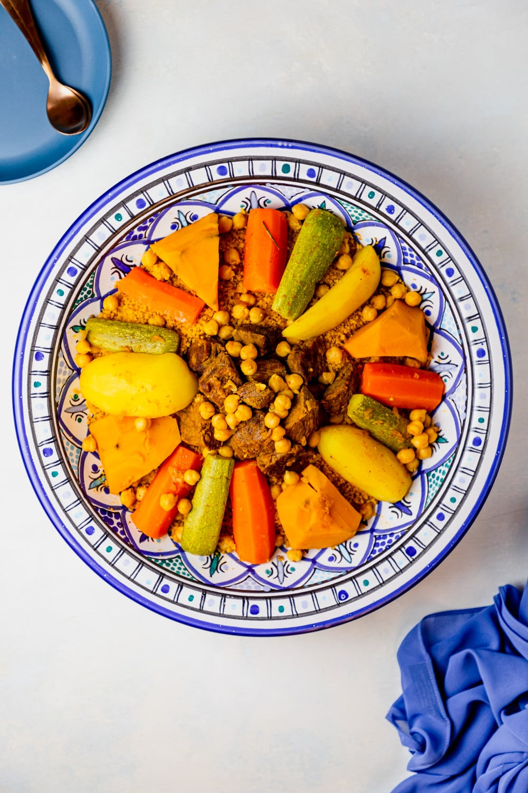

Couscous

Description
Here it is… the recipe many have been waiting for. It’s one of Tunisia’s most popular dishes – COUSCOUS!
Couscous is small steamed balls of crushed durum wheat semolina that is traditionally served with a stew made with vegetables and a protein (either chicken, lamb, fish, octopus, or Gadid).
Couscous is known to be a staple in the Arab Maghreb region. Each country has its own way of making it. This recipe is the Tunisian way. It is eaten frequently in Tunisian households – at least once or twice a week.
It symbolizes comfort, warmth, and tradition.
The steps to making Tunisian Couscous are pretty much the same for all types of protein. There are minor changes in the spices. For example, cumin, coriander & caraway are used with fish and octopus but not for chicken and lamb. Garlic is used for chicken, fish, and octopus, but not for lamb.
The dish seems elaborate and difficult, but trust me, it is not. Once you have the steps and make it a couple of times, you will be so comfortable cooking it.
Couscous Ingredients (serves 4)
- 500 grams of Uncooked Gluten-Free Couscous
- 75 ml of Virgin Olive Oil
- 2 Large Diced Red Onions
- 2 Cloves of Diced Garlic
- 400 grams of Beef Fondue
- ½ Tablespoon of Paprika
- ½ Tablespoon of Ground Coriander
- ½ teaspoon of Ground Turmeric
- 1 teaspoon of Salt
- ½ teaspoon of Black Pepper
- 1 teaspoon of Ground Ginger
- 2 Tablespoons of Tomato Paste
- 2 Medium Potatoes Peeled and Cut Lengthwise in Half
- 2 Carrots Peeled and Cut Lengthwise in Half
- 3 Zucchini Sliced Lengthwise into Quarters
- 4 Quarters of a Small Pumpkin
- ½ cup of Cooked and Drained Chickpeas
Steps
Preparing the Meat Broth & Vegetables:
- In a large cooking pot, over low-medium heat, add the virgin olive oil. Allow the olive oil to get hot, about one minute. Then add the diced red onions and garlic. Simmer the red onions and garlic over low-medium heat for 3-5 minutes or until the onions have become translucent in color.
- Next, add the beef fondue, paprika, ground coriander, ground turmeric, salt, black pepper, and ground ginger. Using a spatula, mix the ingredients. Allow the beef to cook for 3-4 minutes, occasionally stirring, to brown the sides.
- Then add the potatoes, carrots, zucchini, pumpkin, and tomato paste.
- Immediately, pour boiling water on the vegetables until all the vegetables are covered in water. Using a wooden spatula, mix the ingredients. Then cover the cooking pot and let it simmer over low heat for 15 minutes.
- After 15 minutes, remove the lid, and check on each vegetable by inserting a fork. If the fork smoothly goes into the vegetable, it is cooked. If the vegetable is cooked, remove it and put it aside on a clean plate for later. You might find that the potatoes and pumpkin are cooked, but the carrots and zucchini are not.
- Afterward, cover the cooking pot again and allow it to simmer over low heat for another 15 minutes.
- Once 15 minutes have passed, recheck the vegetables using a fork. Remove the cooked vegetables, and set them aside for later.
- Add the chickpeas, stir, and cover the cooking pot. Let it simmer over low heat for another 15 minutes or unit the meat is cooked.
- Next, separate the meat and chickpeas from the meat broth and set aside the meat, chickpeas, and meat broth.
Making the Couscous
- Read the package instructions for the amount of liquid needed to steam the couscous.
- In a cooking pot, add meat broth equal to the liquid measurement indicated in the package. Bring the meat broth to boil, then turn off the heat. Immediately add the couscous and stir it. Then cover the cooking pot with the lid and allow the couscous to cook for 10 minutes without distributing it.
- Then, using a fork, fluff the couscous to separate the granules.
Assembling the Dish:
- On a large serving plate, add the cooked couscous and shape the couscous into a hill. Note: Keep the remaining meat broth and serve it on the side for anyone who wishes to add more broth to their couscous.
- At the center of the couscous hill, add the meat. Then decorate the sides of the hill with the cooked potatoes, carrots, zucchini, and pumpkin. Then garnish the plate with the cooked chickpeas.
- Serve the couscous while it is warm, with the meat broth on the side for individuals who wish to add more broth to their couscous.